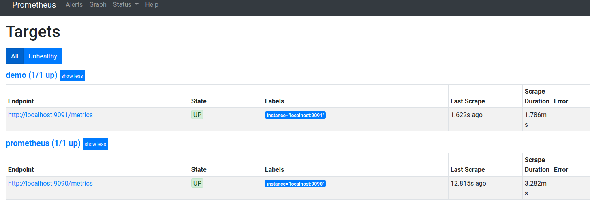
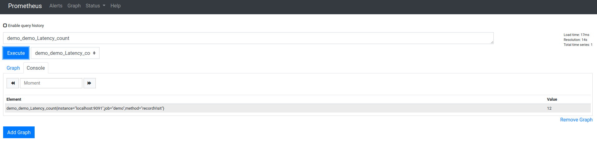
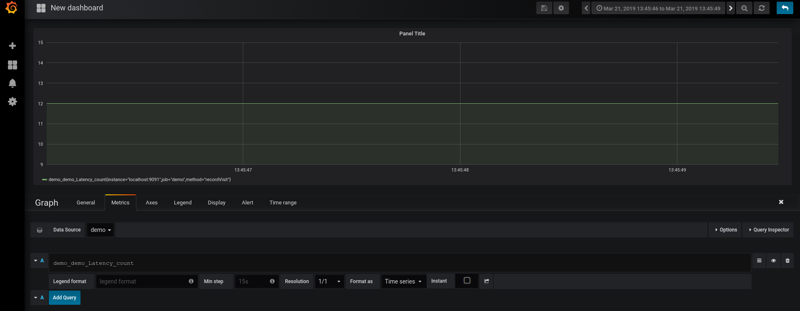
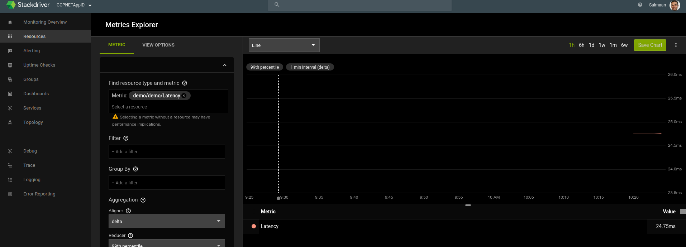
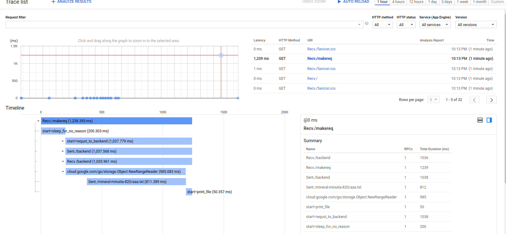
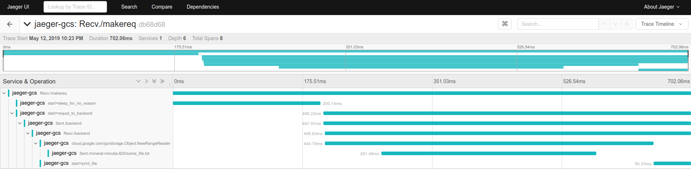

ARTICLES
Google Cloud Trace context propagation and metrics graphs with Grafana+Prometheus and Stackdriver
I wanted to understand how to setup a standalone golang app that integrated Opencensus specifically for Tracing and Metrics. The type of tracing i was after was both automatic and between web requests. By automatic i mean if you initialize opencensus and then directly use a supporting library to access a resrouce (eg. Google Cloud Storage client), tracing information about specific actions within the GCS call is rendered (eg, time taken for each individual get/put operation).
By between web requests I mean if my web application gets a request for an endpoint (eg, /makereq) and then within the handling of that request i make ANOTHER api call (eg /makereq makes an http call to /backend), Opencensus will show a trace between those requests.
I find that feature pretty neat so I wrote up this article to demonstrate how you can trace automatically and between requests …and what happened on the other side in ONE trace root span Opencensus allows you to emit metrics and traces to a variety of sources and as a demonstration of those targets, this sample collects metrics and traces and sends them to both Google Stackdriver or a local Prometheus or Jaeger instance (for metrics and tracing, respectively)
- For Metrics:
- Tracks http latency for a web request handler using middleware
- sends latency statistics to both promethus and stackdriver
- view/graph metrics with grafana
- view/graph metrics with stackdriver
In addition to latency for request, the sample exposes endpoints that demonstrates Trace propagation between requests and with GCP libraries:
- For Traces
- Tracks trace propagation between a simulated ‘frontend’ and ‘backend’ http service within the app:
- An inbound request to
/makereqendpoint displays custom spans as well makes a new http request to the/backendendpoint - Trace data emitted displays the spans within
/makereqand also shows details of what happened within/backend
- An inbound request to
- Displays trace details of GCP API requests (i.,e what happned within the request to retrive a file, for example)
- An inbound request to
/backendwill start custom spans and usegoogle-cloud-storagegolang library to retrive a file
- An inbound request to
- Sends traces to both Jaeger and Stackdriver
- Tracks trace propagation between a simulated ‘frontend’ and ‘backend’ http service within the app:
The code smaple combines both but you can split up the tracing and monitoring components.
Components involved
- Opencensus
- Prometheus
- Grafana
- Stackdriver
- Cloud Trace
- Jaeger
Setup
The setup involves setting up everything locally so the install covers everything from scratch:
Prometheus
Add target to monitor for promethus In the following, prometheus will interrogate the golang application on port
:9091/metricsfor stats
prometheus.yml:
scrape_configs:
- job_name: 'demo'
static_configs:
- targets: ['localhost:9091']
Start Promethus
$ ./prometheusAccess Promethus Dashboard
Grafana
Start grafana web interface
./bin/grafana-server webAccess UI interface:
Username/password: admin/admin
Create a Datasource called “demo” and point it to promethus
http://localhost:9090/Verify the connectivity worksCreate a Dashboard and Graph (do this step after sending some metrics in so the values scraped/provided by promethus shows up)
- Note: setting up a graph in Grapfana isn’t intuitive; you’ve got to setup a dashboard-graph, and within the graph select the ‘Edit’ dropdown..
Jaeger
Download and start container image for Jaeger
docker run \
--interactive \
--tty \
--publish=16686:16686 \
--publish=14268:14268 \
jaegertracing/all-in-one:latest
Access WebUI:
http://localhost:16686/
Download GCP Service Account JSON key file
This is only used by Cloud Trace and Stackdriver Metrics; Promethus and Grafana will ofcourse work without it.
Make sure the service account has Monitoring Metric Writer, Cloud Trace Agent IAM permissions
Start app
export GOOGLE_APPLICATION_CREDENTIALS=/path/to/svc.json
Export env var defining your google cloud project:
$ export GOOGLE_CLOUD_PROJECT=your_project_id
Upload a sample file to the default GCS Bucket for the project (we will read this file in from the app later)
$ echo "fooo" > some_file.txt
$ gsutil cp some_file.txt gs://$GOOGLE_CLOUD_PROJECT/
Run App
$ go run main.go
Access your app at these two endpoints - http://localhost:8080/ - Endpoint just displays the environment variables - Opencensus handlers are invoked to track the latency measures
- http://localhost:8080/makereq
- Endpoint makes an ountbound HTTP call to
/backendendpoint on the same application - The trace context from
/makereqis transferred under a span to/backend /backendtakes the trace context, then makes a GCS API call to recall a filesome_file.txt
- Endpoint makes an ountbound HTTP call to
View Metrics
In both endpoints, you should see statstics emitted by opencensus on the promethus scrapers endpoint:
You should see something like this after 30s
# HELP demo_demo_Latency The distribution of latencies
# TYPE demo_demo_Latency histogram
demo_demo_Latency_bucket{method="recordVisit",le="25"} 0
demo_demo_Latency_bucket{method="recordVisit",le="50"} 11
demo_demo_Latency_bucket{method="recordVisit",le="100"} 11
demo_demo_Latency_bucket{method="recordVisit",le="250"} 11
demo_demo_Latency_bucket{method="recordVisit",le="500"} 11
demo_demo_Latency_bucket{method="recordVisit",le="1000"} 11
demo_demo_Latency_bucket{method="recordVisit",le="2500"} 12
demo_demo_Latency_bucket{method="recordVisit",le="5000"} 12
demo_demo_Latency_bucket{method="recordVisit",le="+Inf"} 12
demo_demo_Latency_sum{method="recordVisit"} 615.0219909999998
demo_demo_Latency_count{method="recordVisit"} 12
Prometheus
Verify Promethus scrpe targets are valid/ok

Ask promethus to display the metric set, in our case, we’re emitting
demo_demo_Latency_count

Grafana
Grafana will read in the promethus collected stats and display them in a chart for the
demo datasource under demo_demo_Latency_count:

Stackdriver
Stackdriver should also display the same data emitted by opencensus:

The metric we emitted translates to:
```yaml
{
"name": "projects/mineral-minutia-820/metricDescriptors/custom.googleapis.com/opencensus/demo/Latency",
"labels": [
{
"key": "method"
},
{
"key": "opencensus_task",
"description": "Opencensus task identifier"
}
],
"metricKind": "CUMULATIVE",
"valueType": "DISTRIBUTION",
"unit": "ms",
"description": "The distribution of latencies",
"displayName": "demo/demo/Latency",
"type": "custom.googleapis.com/opencensus/demo/Latency"
},
An actual metric datapoint for this distribution type looks like
{
"timeSeries": [
{
"metric": {
"labels": {
"method": "recordVisit",
"opencensus_task": "go-64976@srashid3"
},
"type": "custom.googleapis.com/opencensus/demo/Latency"
},
"resource": {
"type": "global",
"labels": {
"project_id": "mineral-minutia-820"
}
},
"metricKind": "CUMULATIVE",
"valueType": "DISTRIBUTION",
"points": [
{
"interval": {
"startTime": "2019-03-22T17:19:04.534761Z",
"endTime": "2019-03-22T17:28:04.534826Z"
},
"value": {
"distributionValue": {
"count": "97",
"mean": 0.09148156701030928,
"sumOfSquaredDeviation": 0.1044109482538145,
"bucketOptions": {
"explicitBuckets": {
"bounds": [
0,
25,
50,
100,
250,
500,
1000,
2500,
5000
]
}
},
"bucketCounts": [
"0",
"97"
]
}
}
},
{
Tracing
Finally, the trace context is propagated from /makereq –> /backend –> GCS
So what you should see is the full trace in stackdriver like this:

in Jaeger console

WHat makes this possible is transferring the golang context forward:
for example, in
- `/makereq`:
```golang
func makereq(resp http.ResponseWriter, req *http.Request) {
client := &http.Client{Transport: &ochttp.Transport{}}
// start span
c, sleepSpan := trace.StartSpan(req.Context(), "start=sleep_for_no_reason")
time.Sleep(200 * time.Millisecond)
sleepSpan.End()
// end span
// Start span
c, span := trace.StartSpan(req.Context(), "start=requst_to_backend")
hreq, _ := http.NewRequest("GET", "http://localhost:8080/backend", nil)
// add context to outbound http request
hreq = hreq.WithContext(c)
rr, err := client.Do(hreq)
if err != nil {
log.Printf("Unable to print file contentt: %v", err)
http.Error(resp, http.StatusText(http.StatusInternalServerError), http.StatusInternalServerError)
}
fmt.Fprintf(resp, "%s \n", rr.Status)
rr.Body.Close()
span.End()
// end Span
}
/backend
func backend(resp http.ResponseWriter, req *http.Request) {
// Acquire inbound context
ctx := req.Context()
tokenSource, err := google.DefaultTokenSource(oauth2.NoContext, storage.ScopeReadOnly)
if err != nil {
log.Printf("Unable to acquire token source: %v", err)
http.Error(resp, http.StatusText(http.StatusInternalServerError), http.StatusInternalServerError)
}
// Make GCS api request
storeageCient, err := storage.NewClient(ctx, option.WithTokenSource(tokenSource))
if err != nil {
log.Printf("Unable to acquire storage Client: %v", err)
http.Error(resp, http.StatusText(http.StatusInternalServerError), http.StatusInternalServerError)
}
bkt := storeageCient.Bucket(os.Getenv("GOOGLE_CLOUD_PROJECT"))
obj := bkt.Object("some_file.txt")
//r, err := obj.NewReader(context.Background())
r, err := obj.NewReader(ctx)
if err != nil {
log.Printf("Unable to read filest: %v", err)
http.Error(resp, http.StatusText(http.StatusInternalServerError), http.StatusInternalServerError)
}
defer r.Close()
// End GCS API call
// Start Span
_, fileSpan := trace.StartSpan(ctx, "start=print_file")
if _, err := io.Copy(os.Stdout, r); err != nil {
log.Printf("Unable to print file contentt: %v", err)
http.Error(resp, http.StatusText(http.StatusInternalServerError), http.StatusInternalServerError)
}
time.Sleep(50 * time.Millisecond)
fileSpan.End()
// End Span
fmt.Fprintf(resp, "backend")
}
Notice the request context is reacquired and passed into theoutbound request with opencensus client:
client := &http.Client{Transport: &ochttp.Transport{}}
hreq, _ := http.NewRequest("GET", "http://localhost:8080/backend", nil)
hreq = hreq.WithContext(c)
rr, err := client.Do(hreq)
and on the backend, we use the inbound context to create spans and even call GCS
ctx := req.Context()
storeageCient, err := storage.NewClient(ctx, option.WithTokenSource(tokenSource))